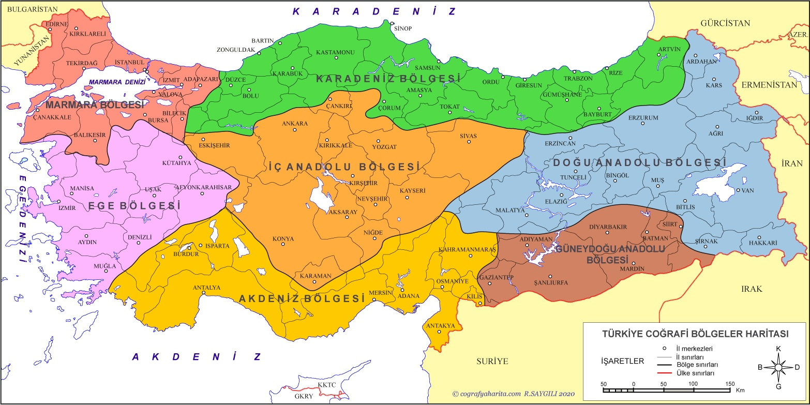

Türkülerimiz, Türk halkının tarih boyunca yaşadığı sevinçleri, acıları ve kahramanlıkları dile getiren en kıymetli hazinelerimizdir. Her bölgemiz, kendine has ağzı ve enstrümanlarıyla bu zenginliği besler.
Yönerge: Birazdan Türkiye'nin 7 bölgesinden 7 farklı türküye konuk olacağız. Harita üzerindeki bölgelere tıklayarak o yörenin türküsünü dinleyebilir, müziği panelden kontrol edebilirsin. Hazırsan yolculuğa başlayalım!
